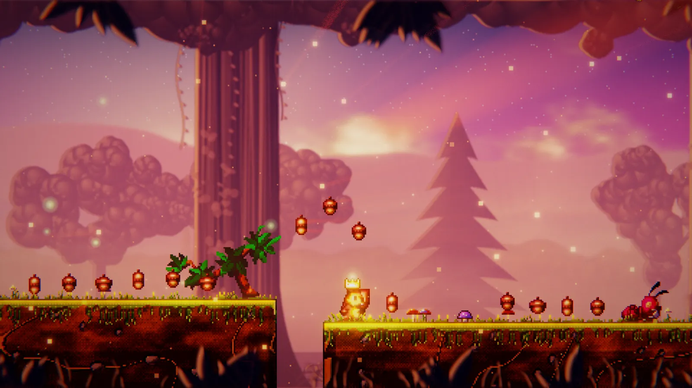
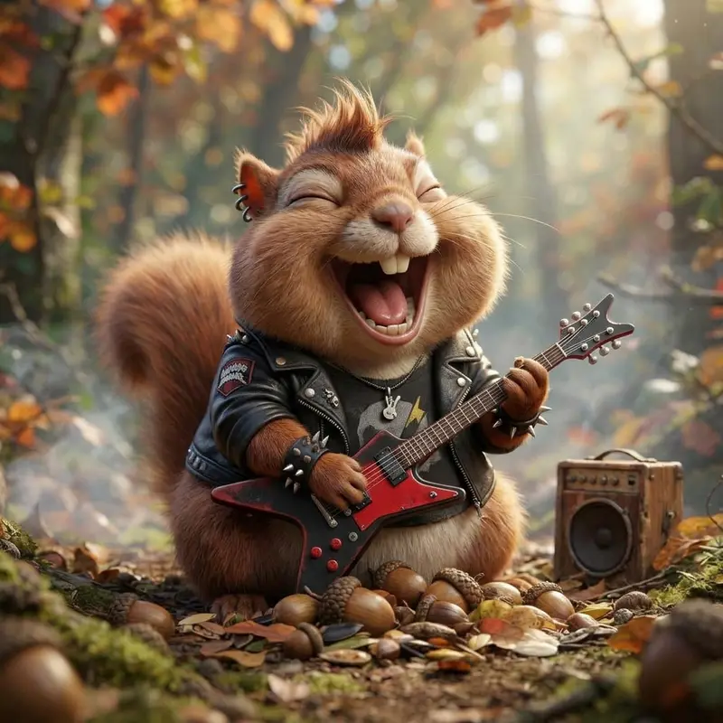
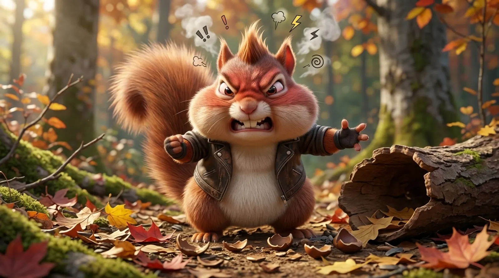
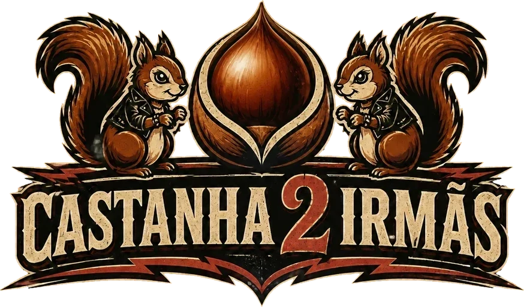
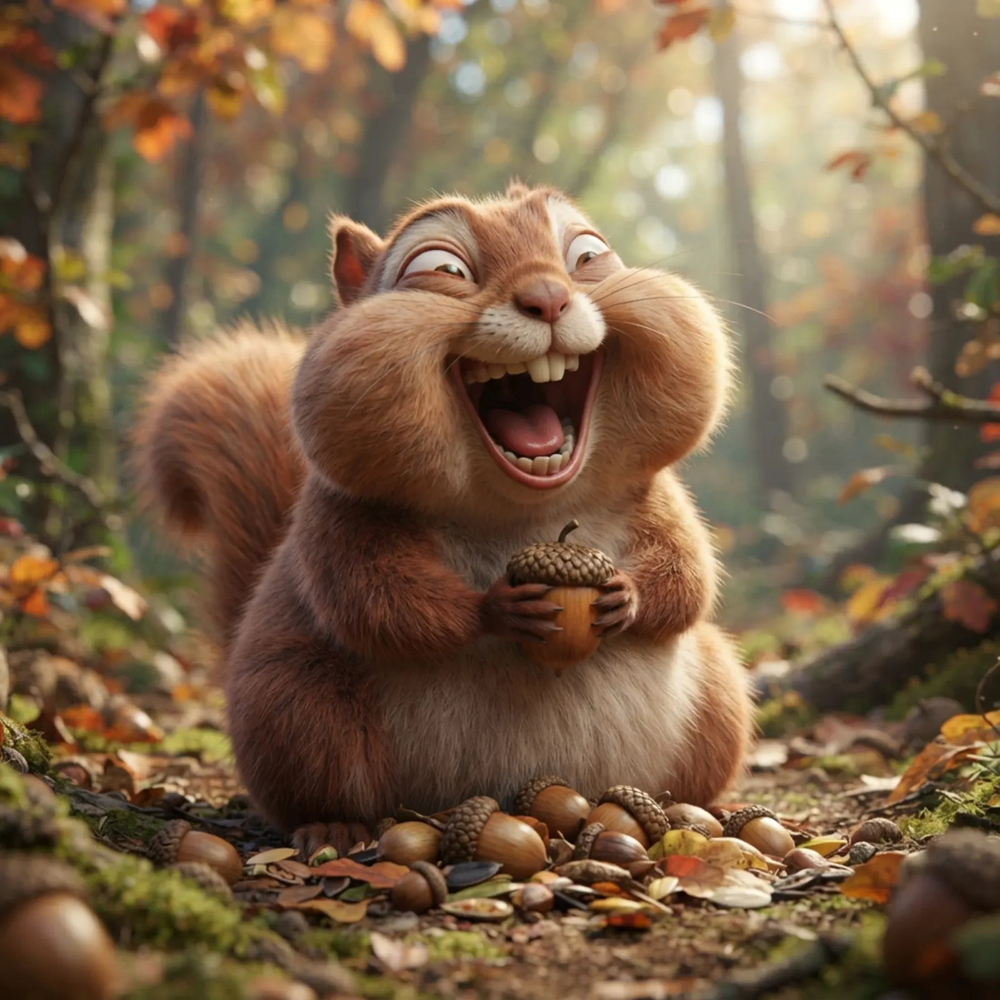

Rei da Castanha apresenta
Pânicona Floresta
Alguém saqueou a despensa do Rei. Agora ele corre, pula e pisa em formiga até recuperar cada castanha e chegar ao caminhão das Duas Irmãs.

Joga aqui mesmo
Plataforma 2D no navegador, sem instalar nada. Cada partida nasce de uma semente: digite a mesma e você joga a mesma floresta que o seu amigo.
- Teclado
- ← → ou A D andam. Espaço pula, e segurando vai mais alto. J ou X dá um tabefe. Esc pausa.
- Controle
- O analógico anda, o botão de baixo pula, o da esquerda bate e Start pausa. Funciona com Xbox e PlayStation.
- Celular
- Deite o aparelho e use os botões na tela: andar, Bater e Pular. Em tela cheia fica bem melhor.
- A regra do caminhão
- Pise ou bata nos bichos (o terceiro tabefe seguido é o Combo do Rei) e junte castanhas. O caminhão só abre quando você bate a meta da fase. A cada 25 castanhas, ganha um coração.
A saga em quatro atos
A faixa conta uma história de fome e fúria. O jogo é o terceiro ato: os outros três você vê aqui.
-

Ato 1: A despensa foi saqueada
“Cadê minhas castanhas?!” O tronco está vazio, só sobraram cascas. A fome vira indignação e a floresta inteira sente o clima.
-
Ato 2: A fúria vira rock
Jaqueta de couro, guitarra ligada e o amplificador no máximo. Cada acorde é um trovão entre as árvores.
-

Ato 3, você joga: A corrida até o caminhão
O caminhão da Castanha 2 Irmãs está carregado, mas só abre para quem provar que merece. Cinco fases, do amanhecer ao festival sob a lua.
Jogar este ato -

Ato 4: Castanhas para todo lado
A fome passou, a raiva acabou e o Rei está no paraíso. Na floresta, a alegria tem nome.
Pânico na Floresta
Faixa original do Rei da Castanha. Fome, fúria e castanhas em três minutos de rock.
Mercado das Duas Irmãs
Aqui ninguém aceita dinheiro. Pague com folhas, brilhos ou pedras, e se a bolsa esvaziar, cate mais na floresta. O mercado é de brincadeira: nada é cobrado de verdade.
Fotos dos produtos: Wikimedia Commons, cada uma com sua licença (em geral CC BY-SA). O link “foto” de cada item mostra autoria e licença.